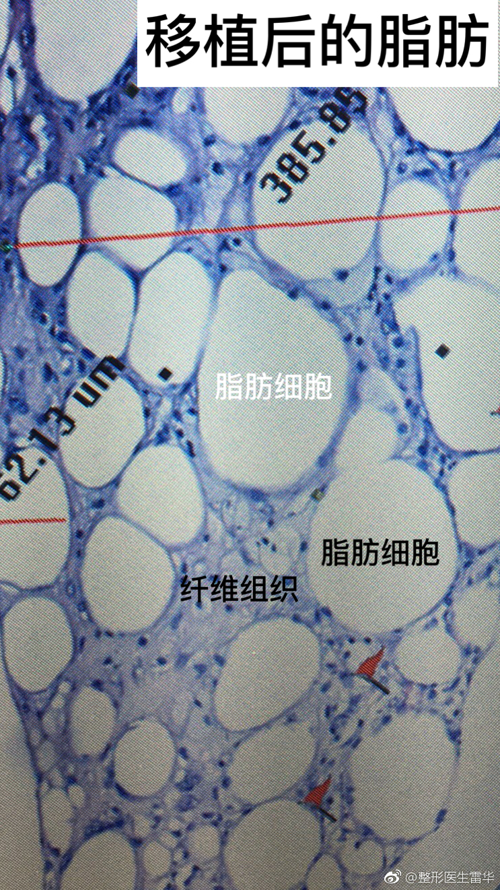

脂肪可以替代玻尿酸做各种填充，缺点就是不可逆，填多了很麻烦，听听来自医生的忠告。
@整形医生雷华:
关于面部脂肪移植后修复
最近天气凉快了，想做手术的人越来越多了。由于最近我们搞了一个面部脂肪移植修复的特价活动，所以几乎天天有人来面诊。面诊时所有人的主诉都是脂肪移植后成活很好，但是显得臃肿很难看，要求把脸上的脂肪去掉。我仔细观察和详细的打问病史，发现多数人是做了两次甚至更多次的脂肪移植，而且术后体重增加，而且用的是腹部或腰部或大腿的脂肪。根据这么多年对脂肪移植的研究，我认为这些患者的情况不外乎3种原因：1，植入的脂肪成活过多，或者说多次移植，每次的成活量累加在一起显得多。其实大家可能不知道，从医生的角度都想让脂肪多活一些，因为脂肪移植的弊端就是不能完全成活，大部分脂肪细胞因缺血缺氧死掉了，所以患者都会因为脂肪不能完全成活而怀疑或不选择脂肪移植，所以医生们在不断的提高技艺，好让脂肪细胞多存活，好让更多患者能接受脂肪移植，所以现在的脂肪移植技术已经大大改进，成活率都在30-50%，甚至更高。所以如果缺陷不严重，多数做一次就可以了，就算做第二次也要比第一次保守很多。2，植入的脂肪组织，多数脂肪细胞坏死了，但其中的脂肪干细胞并没有坏死，它们为了修复这些坏死的脂肪细胞大量增殖分化再形成脂肪细胞，有些人的脂肪干细胞能力超强，反应过度，形成较多的脂肪细胞，所以显得移植的脂肪过多臃肿。这种情况医生和患者不能左右干细胞的行为，但是可以少打一些脂肪，因为这些增殖的干细胞都是来源于植入的脂肪本身，也就是说植入脂肪的时候要保守不要过量，患者不要要求医生“多打点多打点”，这样干细胞的数量也会减少，再生的脂肪也会减少。3，面部植入的脂肪细胞会随着体重的增加而增大，尤其是从大腿、臀部或腹部取的脂肪，增大尤为明显。为什么呢？告诉大家一个秘密，从一个部位取的脂肪就永远具备这个部位的特点，比如从大腿取的脂肪永远是大腿的脂肪特性，有些女孩子大腿粗，长胖时大腿增粗最明显，那么她大腿的脂肪细胞移到面部仍然是大腿脂肪的特性--随身体长胖细胞体积明显增大，这就是为什么有些人取了大腿或腹部或其他容易发胖部位（因人而异）的脂肪移植到面部后，开始都很好，可是体重一增加，脸就像面包一样发起来了。所以，现在遇到面部吸脂的顾客，我总要看看她面部有没有需要脂肪移植的地方，如果有就劝她利用面部吸出来的脂肪充填，因为面部的脂肪细胞的特性永远是面部的，而且面部脂肪细胞有限，扔了就永远没有了。所以说，脂肪移植后最后控制体重在比较稳定的范围，如果体重下降，脂肪细胞也会萎缩变小，面部会又变的凹陷不饱满。
给大家说这些的目的就是：脂肪移植要保守，不够可以再填一点，多了取出来就不容易了。现在天天看到为脸上脂肪过多而苦恼的人，我也觉得很苦恼，因为移植的脂肪和自己原位生长的脂肪不一样，纤维组织很多，质地比较坚韧，很难抽吸，出血也比较多，恢复比较慢。虽然说抽吸后的效果也还不错，但毕竟又花钱又受罪，所以劝大家脂肪移植要保守，保守，再保守，千万不要追求网红脸，千万、千万、千万！！！ 北京·苹果园街区
北京·苹果园街区
最近天气凉快了，想做手术的人越来越多了。由于最近我们搞了一个面部脂肪移植修复的特价活动，所以几乎天天有人来面诊。面诊时所有人的主诉都是脂肪移植后成活很好，但是显得臃肿很难看，要求把脸上的脂肪去掉。我仔细观察和详细的打问病史，发现多数人是做了两次甚至更多次的脂肪移植，而且术后体重增加，而且用的是腹部或腰部或大腿的脂肪。根据这么多年对脂肪移植的研究，我认为这些患者的情况不外乎3种原因：1，植入的脂肪成活过多，或者说多次移植，每次的成活量累加在一起显得多。其实大家可能不知道，从医生的角度都想让脂肪多活一些，因为脂肪移植的弊端就是不能完全成活，大部分脂肪细胞因缺血缺氧死掉了，所以患者都会因为脂肪不能完全成活而怀疑或不选择脂肪移植，所以医生们在不断的提高技艺，好让脂肪细胞多存活，好让更多患者能接受脂肪移植，所以现在的脂肪移植技术已经大大改进，成活率都在30-50%，甚至更高。所以如果缺陷不严重，多数做一次就可以了，就算做第二次也要比第一次保守很多。2，植入的脂肪组织，多数脂肪细胞坏死了，但其中的脂肪干细胞并没有坏死，它们为了修复这些坏死的脂肪细胞大量增殖分化再形成脂肪细胞，有些人的脂肪干细胞能力超强，反应过度，形成较多的脂肪细胞，所以显得移植的脂肪过多臃肿。这种情况医生和患者不能左右干细胞的行为，但是可以少打一些脂肪，因为这些增殖的干细胞都是来源于植入的脂肪本身，也就是说植入脂肪的时候要保守不要过量，患者不要要求医生“多打点多打点”，这样干细胞的数量也会减少，再生的脂肪也会减少。3，面部植入的脂肪细胞会随着体重的增加而增大，尤其是从大腿、臀部或腹部取的脂肪，增大尤为明显。为什么呢？告诉大家一个秘密，从一个部位取的脂肪就永远具备这个部位的特点，比如从大腿取的脂肪永远是大腿的脂肪特性，有些女孩子大腿粗，长胖时大腿增粗最明显，那么她大腿的脂肪细胞移到面部仍然是大腿脂肪的特性--随身体长胖细胞体积明显增大，这就是为什么有些人取了大腿或腹部或其他容易发胖部位（因人而异）的脂肪移植到面部后，开始都很好，可是体重一增加，脸就像面包一样发起来了。所以，现在遇到面部吸脂的顾客，我总要看看她面部有没有需要脂肪移植的地方，如果有就劝她利用面部吸出来的脂肪充填，因为面部的脂肪细胞的特性永远是面部的，而且面部脂肪细胞有限，扔了就永远没有了。所以说，脂肪移植后最后控制体重在比较稳定的范围，如果体重下降，脂肪细胞也会萎缩变小，面部会又变的凹陷不饱满。
给大家说这些的目的就是：脂肪移植要保守，不够可以再填一点，多了取出来就不容易了。现在天天看到为脸上脂肪过多而苦恼的人，我也觉得很苦恼，因为移植的脂肪和自己原位生长的脂肪不一样，纤维组织很多，质地比较坚韧，很难抽吸，出血也比较多，恢复比较慢。虽然说抽吸后的效果也还不错，但毕竟又花钱又受罪，所以劝大家脂肪移植要保守，保守，再保守，千万不要追求网红脸，千万、千万、千万！！！

- 